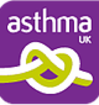
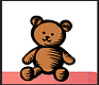

<!DOCTYPE html>
<html lang="en">
<head>
    <meta charset="utf-8">
    <meta http-equiv="X-UA-Compatible" content="IE=edge">
    <meta name="viewport" content="width=device-width, initial-scale=1">
    <!-- The above 3 meta tags *must* come first in the head; any other head content must come *after* these tags -->
    <title>GAPR-UKI</title>

    <!-- Bootstrap -->
    <link href="css/bootstrap.min.css" rel="stylesheet">
    <link href="https://fonts.googleapis.com/css?family=Lora" rel="stylesheet">
    <link rel="stylesheet" type="text/css" href="mystyle.css">
    <!-- HTML5 shim and Respond.js for IE8 support of HTML5 elements and media queries -->
    <!-- WARNING: Respond.js doesn't work if you view the page via file:// -->
    <!--[if lt IE 9]>
    <script src="https://oss.maxcdn.com/html5shiv/3.7.2/html5shiv.min.js"></script>
    <script src="https://oss.maxcdn.com/respond/1.4.2/respond.min.js"></script>
    <![endif]-->
    <style>

    </style>


</head>
<body style="background-color:#FFF8E4" data-spy="scroll" data-target=".menubuttons li" class="fof">

<div id="topbox">
    <a href="http://gapruki.github.io"></a>
    <div id="textlogo">General and Adolescent <br> Paediatric Research <br> Collaborative <br> UK and Ireland</div>
    <span class="buttons">
            <button type="button" id="signupbutton"><span style="color:#FFFB00"><b>Join GAPR-UKI</b></span></button>
            <button type="button" id="loginbutton"><span style="color:#074888"><b>Log in</b></span></button>
      </span>
</div>

<div class="clear"></div>

<!--  -->
<div id="menu">
    
    <div>
    <ul>

        <li class="dropdown menubuttons">
          <a href="index.html">ABOUT US</a>
          <div class="dropdown-content">
              <a href="why.html">Why GAPRUKI?</a>
              <a href="visiongoals.html">Our Vision and Goals</a>
          </div>
        </li>

        <li class="menubuttons"><a href="members.html">MEMBERS</a></li>
        <li class="menubuttons"><a href="healtheconomics.html">HEALTH ECONOMICS</a></li>
        <li class="menubuttons"><a href="publications.html">PUBLICATIONS</a></li>

        <li class="dropdown menubuttons">
            <a class="active">RESOURCES</a>
            <div class="dropdown-content">
                  <a href="resources_paediatric.html">Paediatric Resources</a>
                  <a href="resources_parent.html">Parent Resources</a>
            </div>

        </li>


        <li class="menubuttons"><a href="studies.html">CURRENT STUDIES</a></li>
    </ul>

    <div class="clear"></div>
</div>
</div>

<div id="textbox">
    <p id="text">
        <b>BAGP</b><br>
        <a href="http://www.bagp.org.uk/">
            
        </a>
        <br><br>

         <b>Paediatric Emergency Research in the United Kingdom & Ireland (PERUKI)</b><br>
         <a href="http://www.peruki.org/">
             
         </a>

         <br><br>

         <b>Asthma UK</b><br>
         <a href="https://www.asthma.org.uk/">
             
         </a>

         <br><br>

         <b>Medicines for Children Research Network (MCRN)</b><br>
         <a href="http://www.mcrn.org.uk/">
             
         </a>

         <br><br>

         <b>Association of Paediatric Emergency Medicine (APEM)</b><br>
         <a href="https://www.apem.me.uk/">
             
         </a>

         <br><br>


        <b>Medicines and prescribing</b><br><br>
 
<a href="http://www.medicinesforchildren.org.uk/" target="_blank"><b>Medicines for Children</b></a><br>
The vision: That any parent, wherever they are, have information on their child’s medicines that they need and can trust. Medicines information leaflets cover many of the medicines that are prescribed or recommended to children by health professionals. They answer your questions about how and when to give the medicine, what to do if you forget to give the medicine or give it twice, and any possible side-effects.<br><br>
 
<a href="https://www.evidence.nhs.uk/formulary/bnfc/current" target="_blank"><b>British National Formula for Children (BNFc)</b></a><br>
Not only the latest prescription information related to children but also other useful resources including PowerPoint presentations about prescribing, medication errors and a lot more.<br><br>
 
<a href="http://www.medsiq.org/" target="_blank"><b>Meds IQ</b></a><br>
Medication errors are a significant but preventable cause of harm to children and young people. Meds IQ aims to bring together tools and improvement projects that have been developed to address this problem. <br><br>
 
<a href="https://www.crn.nihr.ac.uk/children/" target="_blank"><b>Medicines for Children Research Network</b></a><br>
The National Institute for Health Research (NIHR) Medicines for Children Research Network (MCRN) has been created to improve the co-ordination, speed and quality of randomised controlled trials and other well designed studies of medicines for children and adolescents, including those for prevention, diagnosis and treatment. The Network has extensive knowledge and experience of paediatric research, and supports non-commercial, pharmaceutical/biotech-sponsored and investigator-led partnership studies in over 100 NHS sites in England that serve approximately 6 million children. The MCRN supports studies through its infrastructure, which includes the MCRN Coordinating Centre, Local Research Networks (LRNs), Clinical Studies Groups (CSGs), Clinical Trial Units (CTUs) and a Neonatal Network.<br><br>
  
<a href="https://www.spottingthesickchild.com/" target="_blank"><b>Sick of the spotted child</b></a><br>
Following on from the well known 'spotting the sick child' CD, this is a new interactive tool commissioned by the Department of Health to support health professionals in the assessment of the acutely sick child. It is aimed at health professionals working with children in primary care and Emergency Departments and -best of all- now free to use (AFTER I joined and coughed up 5 quid).<br><br>
 
<a href="http://www.empem.org/" target="_blank"><b>Empem.org</b></a><br>
An Australian paediatric emergency medicine website, by the looks of it pretty much run by one guy, Colin Parker. Excellent quality podcasts on paediatric topics (my favourite, the review of the Maitland paper on fluid resuscitation). And it’s also really relevant to Primary care and soooo funny! Constipation, the big brown elephant in the room… <br><br>

<a href="http://lifeinthefastlane.com/" target="_blank"><b>LITFL: Life in the Fast Lane</b></a><br>
The EDucationalists' self gratifying white noise aside, there are actually some really good resources for paediatricians and plenty of CPD to be had...after you reflected on your experience, evidenced it and changed your practice, of course.<br><br>
 
<b>X-rays</b><br>
<a href="http://www.hawaii.edu/medicine/pediatrics/pemxray/pemxray.html" target="_blank"><b>Radiology cases in paediatric emergency medicine</b></a><br>
Awarded the 1996 Professional Medical Education Award by the American Academy of Pediatrics and very rightly so: a vast number of clinical cases and x-rays. <br><br>
 
<a href="http://radiopaedia.org/" target="_blank"><b>Radiopedia</b></a><br>
Another websites with loads and loads of x-rays, not exclusively paediatric and not as comprehensive as the former but at least the website has migrated into the next century as far as web design is concerned. Are you also getting the adverts for things that I bought last week? Otherwise fairly annoyance free.<br><br>

<a href="http://www.core-info.cardiff.ac.uk/" target="_blank"><b>CORE  (Welsh Child Protection Systematic Review Group)</b></a><br>
Puts the evidence into child protection! Essential for everyone dealing with child protection issues, i.e. all of us. Important updates on bruising, oral injuries and bites, thermal injuries and fractures with links to the relevant papers as well as downloadable information leaflets. Probably the most comprehensive source of evidence in connection with child abuse in the UK (and beyond).<br><br>
 
<a href="http://www.bestbets.org/" target="_blank"><b>Best Bets</b></a><br>
BETs were developed in the Emergency Department of Manchester Royal Infirmary, UK, to provide rapid evidence-based answers to real-life clinical questions, using a systematic approach to reviewing the literature. BETs take into account the shortcomings of much current evidence, allowing physicians to make the best of what there is. Although BETs initially had an emergency medicine focus, there are a significant number of BETs covering cardiothoracics, nursing, primary care and paediatrics.<br><br>
 
<a href="http://www.alsg.org/uk/" target="_blank"><b>Advanced Life Suport Group</b></a><br>
APLS, ALS, ATLS and now also child protection and soon bee keeping: All you  need to know on those long night shifts covering the emergency department. Information relating to courses and venues.<br><br>
 
<a href="https://www.resus.org.uk/" target="_blank"><b>British Resuscitation Council</b></a><br>
International guidelines, algorithms and the most up to date information on evidence based resuscitation guidelines (paediatric and adult).<br>
Immunisations against infectious diseases <br><br>
 
<a href="https://www.gov.uk/government/collections/immunisation-against-infectious-disease-the-green-book" target="_blank"><b>Green Book</b></a><br>
The famous green book (err, no not that one!): the most up to date and relevant info you’ll ever need for anything related to immunisation.<br><br>
 
<a href="http://www.orpha.net/consor/cgi-bin/index.php" target="_blank"><b>Orphanet</b></a><br>
ORPHANET is a database dedicated to information on rare diseases and orphan drugs. Access to this database is free of charge. ORPHANET aims to improve management and treatment of genetic, auto-immune or infectious rare diseases, rare cancers, or not yet classified rare diseases. Hmm, interesting.<br><br>
 
<a href="http://www.medscape.com/pediatrics" target="_blank"><b>Medscape Pediatrics</b></a><br>
Take a worthwhile look across the Atlantic: features include (amongst others) highlighted educational activities for the week (generally updated twice a week); In Focus: the top articles of the week (generally updated twice week);
Today's News: the top news stories of the day (updated daily); Resource Centers: sections on specific conditions or topics of interest; Library: Journals, textbooks, and reference tools and so on.<br><br>
 
<a href="http://emedicine.medscape.com/pediatrics_general" target="_blank"><b>emedicine</b></a><br>
Always comes on top of that quick Google search in between clinic patients! Related to the Medscape website family.<br><br>



    </p>
</div>


<!-- jQuery (necessary for Bootstrap's JavaScript plugins) -->
<script src="https://ajax.googleapis.com/ajax/libs/jquery/1.11.3/jquery.min.js"></script>
<!-- Include all compiled plugins (below), or include individual files as needed -->
<script src="js/bootstrap.min.js"></script>

</body>
</html>
